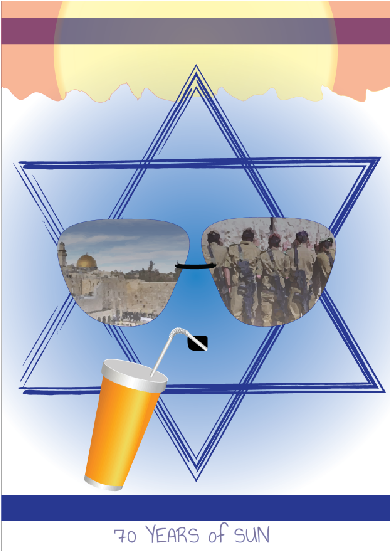

עבודה זו הייתה בשיתוף פעולה עם ACT.IL
מטרת העבודה היא ליצור כרזה בשביל ההסברה הישראלית לסטודנטים בחו"ל
ובנוסף לכך, ציינו 70 שנות למדינת ישראל
בתמונה מטה יצרתי כרזה משלי, שבה ניתן לראות את דגל ישראל עם אלמנטים נוספים:
ברוב עונות השנה יש אצלנו אווירה קיצית, לכן הוספתי את השמש החמה למעלה, משקפי שמש כדי להגן על העיניים מפני, וכוס עם מיץ קר כדי להתרענן.
הפכתי את מגן דוד במרכז הדגל לפרצוף אנושי, ששותה את המיץ הקר ומרכיב את משקפי השמש.
כל משקף קיבל תמונה שמסמלת את הדברים החשובים למדינת ישראל ואלה הם החיילים והצבא שלנו, והעיר ירושלים.
